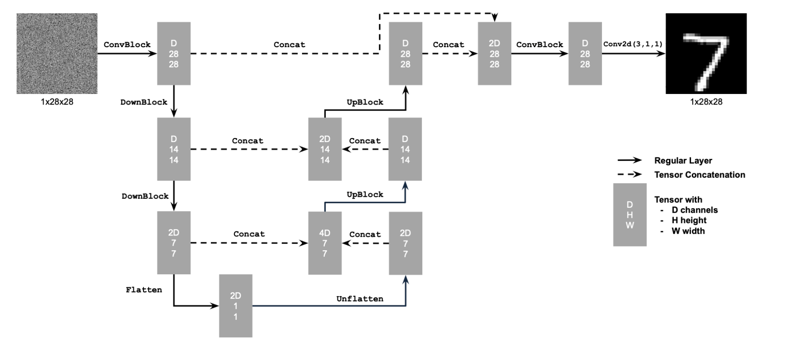
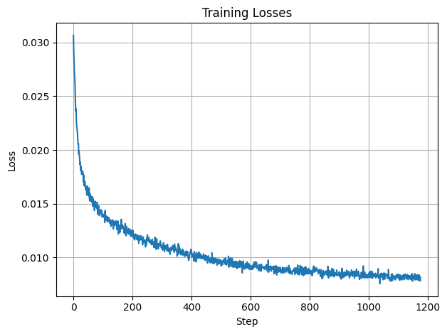
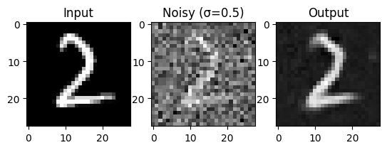
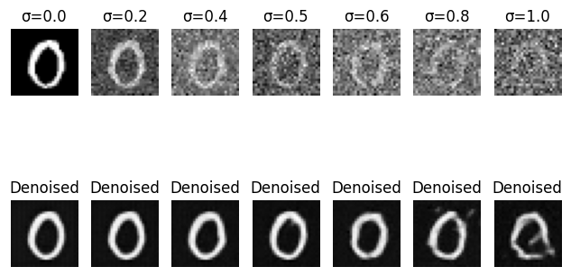
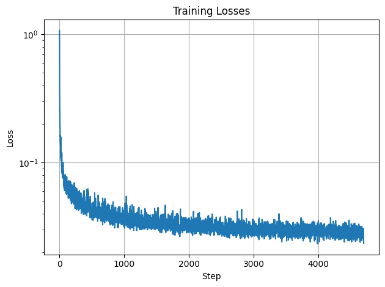

We are using MNIST digits as our training/testing data for this denoiser. A noisy image is generated from a clean image by adding noise at different strengths. This is how the noise looks at different strengths.
I first built a one-step denoiser, which optimizes over L2 loss. Below is the architecture.
I trained this denoiser to denoise a noisy image with σ=0.5, with a batch size of 256 and hidden dimension D=128. I used an Adam optimizer with a learning rate of 1e-4. The model was trained over 5 epochs.
 Below is how the denoiser performs on different σ values.
The time conditioned UNet injects a scalar t into the mdoe architecture.
The time conditioned UNet injects a scalar t into the mdoe architecture.